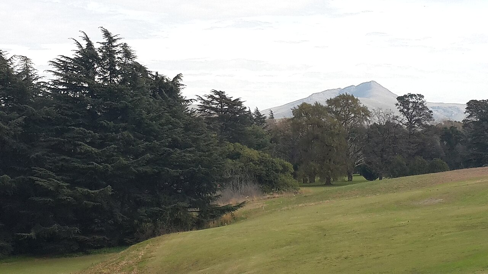
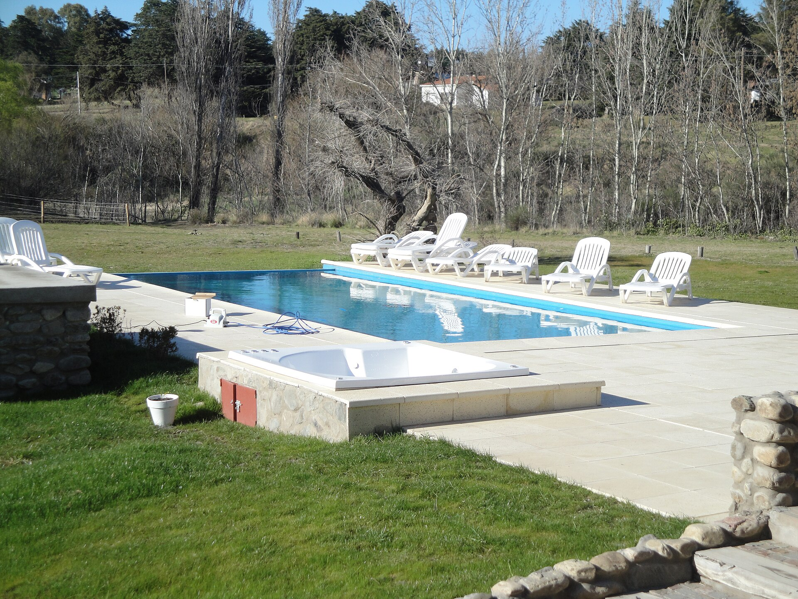

Golf
Green fee de 9 hoyos. Césped y pinos, el cordón de Ventania al fondo. Turnos desde las 9.

Golf, spa y pileta · Ruta 76
Predio tipo resort en Sierra de la Ventana: cancha, spa, pileta y sendero al arroyo. Al costado, el Parque Tornquist y las sierras. La reserva queda en este navegador.
Estadía
Precios de ejemplo. Tocá una tarjeta para ver qué incluye y pedir fechas.
El predio
Cancha con las sierras al fondo, circuito de spa y pileta al aire. El resto del día se sale al parque o al pueblo.
Green fee de 9 hoyos. Césped y pinos, el cordón de Ventania al fondo. Turnos desde las 9.
Masaje, hidromasaje y sauna. Se puede pedir sin pernocte, en el formulario de abajo.

Pileta y jacuzzi al aire, reposeras y césped. En temporada fría el spa cubre el mismo ritmo.
Alrededor
El Parque Provincial Ernesto Tornquist queda a minutos por Ruta 76. Tocá una tarjeta: cerro, garganta, cueva, pueblos y arroyo.
Hoy en el predio
Spa
50 minutos. Aceite de almendras. Con reserva previa.
Circuito de 40 minutos. Toalla incluida.
Turnos de 20 minutos. No hace falta ser huésped del paquete.
Reserva
Nombre, fechas y paquete. También podés anotar solo un turno de spa. Se guarda en este navegador.
Ubicación
Ruta 76 km 227
Sierra de la Ventana, partido de Tornquist
Cerca de la Base Cerro Ventana del Parque Tornquist (km 226).
Parque Tornquist a minutos. Villa Ventana a unos 20 min. Sierra de la Ventana pueblo por la misma ruta.
Ruta 76 km 227
Sierra de la Ventana
Partido de Tornquist
Parque Tornquist a 15 minutos. Villa Ventana a 20. Cerro Ventana con entrada al parque.
Transferencia, efectivo y Mercado Pago. Factura desde el panel.